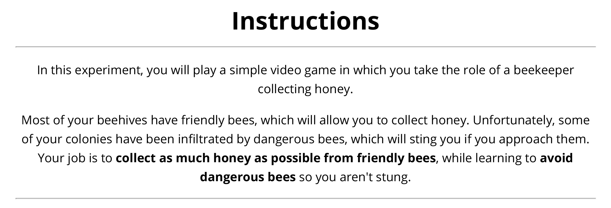
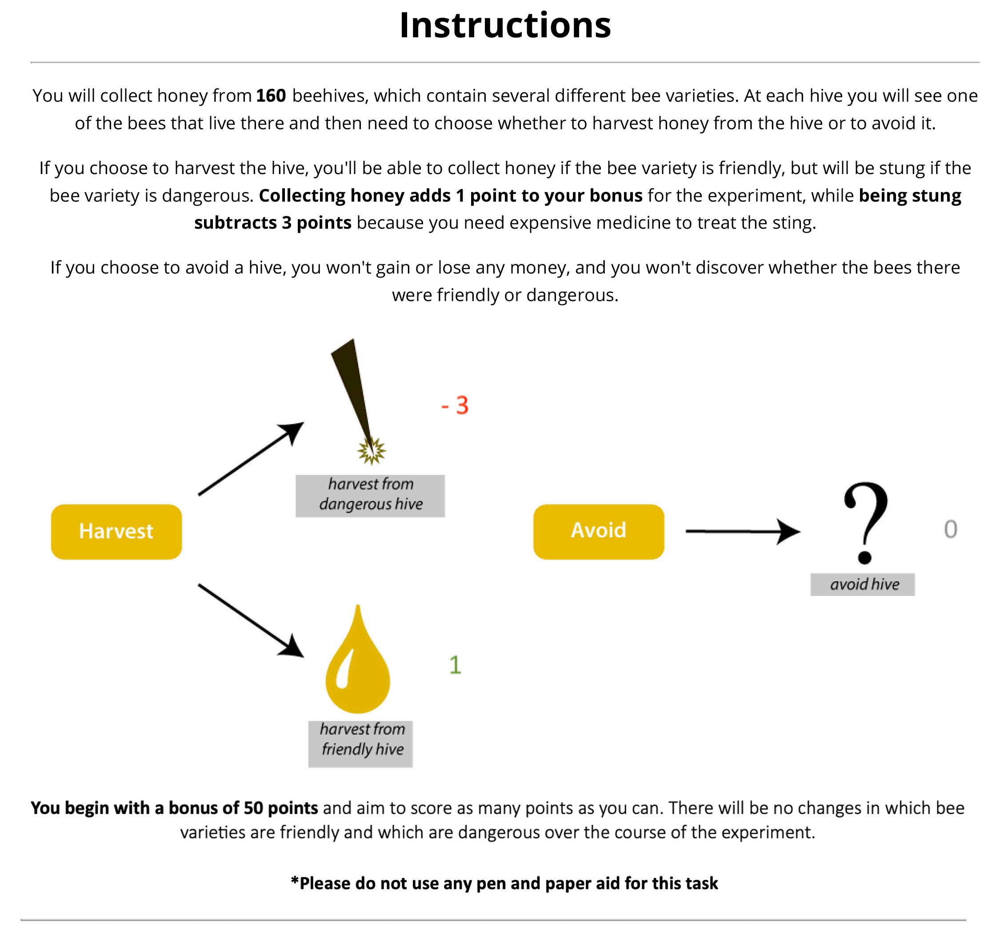
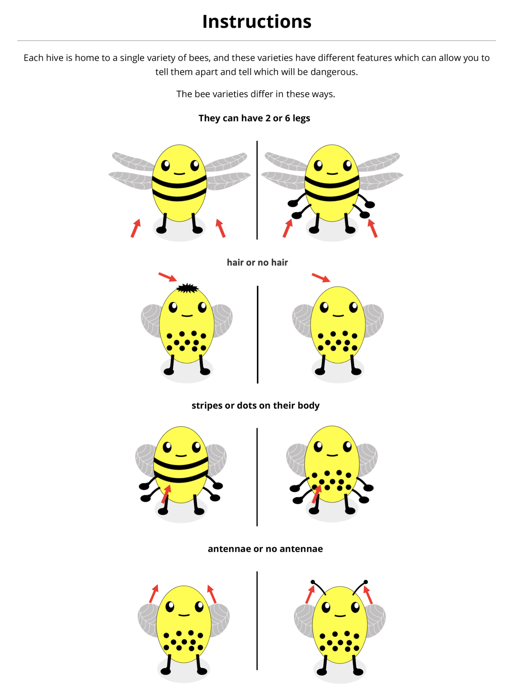
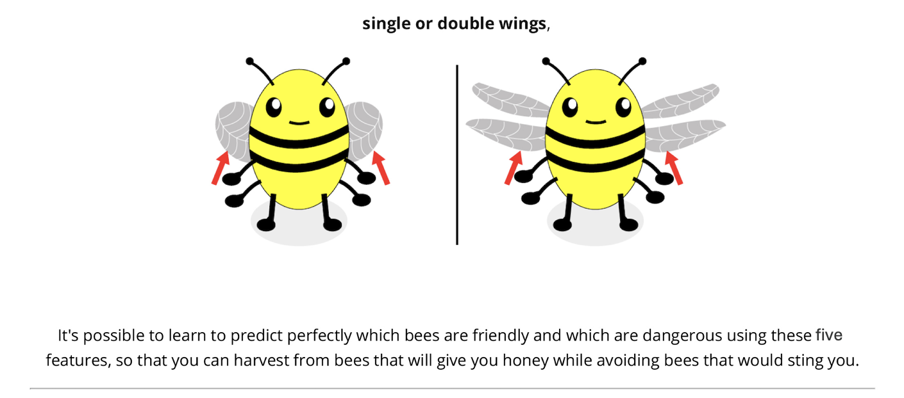
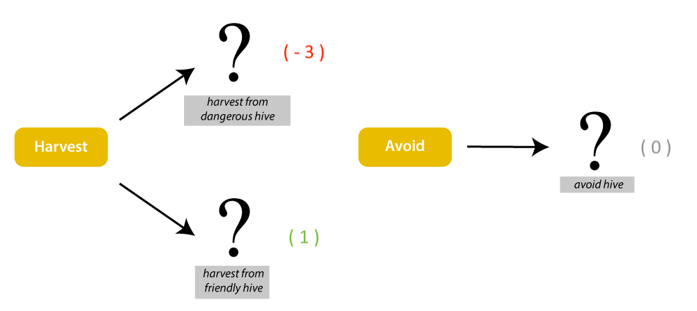

<!DOCTYPE html>

<html>
  <head>
    <meta charset="utf-8">
    <meta name="viewport" content="width=device-width, initial-scale=1, shrink-to-fit=no">
    <title>Warwick University Study</title>
    <script src="./js/jspsych.js"></script>
    <script src="./js/plugins/jspsych-fullscreen.js"></script>
    <script src="./js/plugins/jspsych-instructions.js"></script>
    <script src="./js/plugins/jspsych-html-keyboard-response.js"></script>
    <script src="./js/plugins/jspsych-html-button-response.js"></script>
    <script src="./js/plugins/jspsych-image-keyboard-response.js"></script>
    <script src="./js/plugins/jspsych-external-html.js"></script>
    <script src="./js/plugins/jspsych-survey-html-form.js"></script>
    <script src="./js/jquery.min.js"></script>
    <script type="text/javascript" src="lib/jspsych-pavlovia-2020.2.js"></script>
    <link href="./js/css/jspsych.css" rel="stylesheet" type="text/css"></link>
    <link href="https://fonts.googleapis.com/css2?family=Open+Sans:wght@400;700&display=swap" rel="stylesheet">
  </head>
  <body></body>
  <script>
  /*
   * Honey Harvester task (approach-avoid category learning), jsPsych 6.
   * Used in Antkiewicz, Hills et al., "[paper title]" ([journal/year]).
   * Adapted from Rich & Gureckis (2018), building on the implementation of
   * Li, Gureckis & Hayes (2021).
   *
   * Condition codes: "dim2_XYZ", "dim3_XY" or "dim5". The digit is the number of
   * varying dimensions, and the letters are the dimensions held constant at value 0.
   * Dimensions: A = antennae, B = body pattern, L = legs, W = wings, H = hair.
   * Stimulus images are named img/A?-B?-L?-W?-H?.jpg with values 0 or 1.
   * Dangerous bees have value 1 on both relevant dimensions (relevantDim).
   *
   * Trial structure: 12 blocks of 16 trials (10 learning blocks with feedback,
   * 2 test blocks without feedback). Every 8 consecutive trials contain
   * 2 dangerous and 6 friendly bees.
   *
   * Public version: the Prolific completion code has been removed and no data are
   * saved. To save a local CSV (e.g., when running a demo), uncomment the
   * localSave line in the on_finish function of jsPsych.init. Pavlovia lines are left commented out.
   * Participant-facing text (information sheet, consent, debrief) is unchanged
   * from what participants saw.
   */

  // -------- Set up --------
  /* initialise timeline*/
  var timeline=[];
  var introloop=[];
  var inputprolificID = '';
  // capture info from Prolific
  var prolificID = jsPsych.data.getURLVariable('PROLIFIC_PID');
  var study_id = jsPsych.data.getURLVariable('STUDY_ID');
  var session_id = jsPsych.data.getURLVariable('SESSION_ID');
	var relevantDim;
	var bees_all_possible;
	var condition = select_condition();
	var images = generateImagePaths(condition)
  
  //Randomly draw an experimental contdition (different number of varying dimensions), making sure that the dimensions that are held constant (e.g, A for antennae) are counterbalanced
  function select_condition(){ 
    var cond = jsPsych.randomization.sampleWithoutReplacement(["dim2", "dim3", "dim5"], 1)[0];
	  if (cond == "dim2") {
	    cond = jsPsych.randomization.sampleWithoutReplacement(["dim2_ABL","dim2_ABW","dim2_ABH","dim2_ALW","dim2_ALH","dim2_AWH","dim2_BLW","dim2_BLH","dim2_BWH","dim2_LWH"], 1)[0];
	    return cond;
	  } else if (cond == "dim3") {
	    cond = jsPsych.randomization.sampleWithoutReplacement(["dim3_AB","dim3_AL","dim3_AW","dim3_AH","dim3_BL","dim3_BW","dim3_BH","dim3_LW","dim3_LH","dim3_WH"], 1)[0];
	    return cond;
	  } else if (cond == "dim4") { // legacy option, never sampled in the reported study
	    cond = jsPsych.randomization.sampleWithoutReplacement(["dim4_A","dim4_B","dim4_L","dim4_W","dim4_H"], 1)[0];
	    return cond;
	  } else {
	    cond = "dim5";
	    return cond;
	  }
  }
	 
	 
	 
  //Function that flexibly generates paths to relevant bee images depending on the condition
  function generateImagePaths(condition) {
    const allDims = ['A', 'B', 'L', 'W', 'H'];
  
    // Parse condition string like "dim3_AW", "dim2_ABH", or "dim5"
    const match = condition.match(/dim(\d)_?([A-Z]*)?/);
  
    const numVaryingDims = parseInt(match[1]); //converts the string representing num of dimensions to a number 
    const heldDims = match[2] ? match[2].split('') : []; //if the condition contains dimension held constant (e.g., AW) split them into array ['A', 'W']. if not return empty array
  
    // Initialize dimensional values
    const dimValues = {};
    for (const dim of allDims) {                                                  //for each dimension
      dimValues[dim] = heldDims.includes(dim) ? [0] : [0, 1];                     //check if it is held constant. if yes it is set to 0, otherwise 0 or 1
    }
  
    // Base instruction images
    const imagePaths = [
      './img/instruct-1.jpg',
      './img/instruct-2.jpg',
      './img/instruct-test.jpg',
      `./img/instruct-3-${condition}.jpg`
    ];
    
    // Add extra instruction image if condition is "dim5"
    if (condition === "dim5") {
      imagePaths.push('./img/instruct-3-dim5-bottom.jpg');
    }
  
    // Generate all combinations of image paths based on dimensions
    for (const a of dimValues.A) {                                              //go through each possible value for A dimenision
      for (const b of dimValues.B) {                                            // ...
        for (const l of dimValues.L) {
          for (const w of dimValues.W) {
            for (const h of dimValues.H) {
              const filename = `./img/A${a}-B${b}-L${l}-W${w}-H${h}.jpg`;
              imagePaths.push(filename);
            }
          }
        }
      }
    }
  
    return imagePaths;
  }


  // Code which stops participants from refreshing (or leaving the page) without a warning
  window.onbeforeunload = function(){
    return "Are you sure you want to leave the experiment?";
  };
	  
    
	function startExperiment(){
      // record uniqueid in the jsPsych data
      jsPsych.data.addProperties({
        relevantDim: relevantDim,
        subject_id: prolificID,
        study_id: study_id,
        session_id: session_id,
        condition: condition,
        browserinfo: navigator.userAgent, 
      });
        
   

          jsPsych.init({ 
        timeline: timeline,
        preload_images: images,
        show_progress_bar: false,
        auto_update_progress_bar: false,
        on_finish: function(data) {
        // jsPsych.data.get().localSave('csv', 'exp_' + condition + '_' + (prolificID || 'demo') + '.csv'); // uncomment to save a local CSV
        var debriefText = `
<div style="text-align: left; font-size: 1em; line-height: 1.5em; font-family: 'Open Sans', sans-serif; margin: 0 auto; max-width: 1200px;">
              <p style="text-align: center;font-size: 1.5em;line-height: 1.5em;"><strong> Debriefing </strong><br />
              <p style="font-size: 1em; display: block;"><strong>Title of Project:</strong> Learning from action-dependent experience</p>
              <p style="font-size: 1em; display: block;"><strong>Name of Researcher(s):</strong> Jan Antkiewicz </p>
              <p style="font-size: 1em; display: block;"><strong>Name of Supervisor:</strong> Professor Thomas Hills</p>
              
              <div style="text-align: center; margin-bottom: 20px;">
              <p style="font-size: 1.1em;">
              <strong> This is the end of the experiment. Congratulations! <br>
              You have gained <span style="color: #FFBF00;"><strong>${pointsCurrent}</strong></span> points on the Beekeeping task, 
              which means that you will be paid <span style="color: #FFBF00;"><strong>${calculateBonus()}£</strong></span> of bonus.
              </strong>
              <br/>
              </p>
              <p style="font-size: 0.95em;">*Please note that your bonus will be paid after we finish collecting data from all participants.</p>
              </div>

              <p style="margin-top: 0;"><strong>Study Aims:</strong><br/>The world that surrounds us is full of complexity and randomness. To operate in such world despite the limitations of our brains we learned to use various mental shortcuts. However, these shortcuts can sometimes lead to oversimplified thinking and bias. When in the course of learning from experience a person develops an overly simplistic belief about the world one is said to have fallen into a "learning trap".<br/><br/>
              
             On the Beekeeping task, you were asked to discover which bees were friendly/dangerous based on their features. The rule in our experiment was always based on two relevant features. For example, all bees with both Striped Body and Double Wings would be dangerous. Some people, however, oversimplify the rule, focusing on just one feature (e.g., avoiding all bees with Double Wings). Without feedback on the bees they avoid, people don’t realize that some of those avoided bees are actually friendly, which prevents them from correcting their simplistic belief<br/><br/>
             
             Our research explored how the complexity of the environment affects creation of learning traps. The rule predictive of bees beeing friendly/dangerous always depended on two features. However, some people encountered bees that differed on five dimensions (Antennae, Body, Wings, Legs and Hair), while others saw bees that differend on only three or two diemnsions. We hypothesized that in more complex environments more people will be inclined to adopt the simplistic 'learning trap' rule.</p></br>

               <p style="margin-top: 0;"><strong>Withdrawal:</strong><br/>If you wish to withdraw your data from this study, please email the researcher Jan Antkiewicz (jan.antkiewicz@warwick.ac.uk) quoting your ProlificID: <strong>${inputprolificID}</strong> by 15.08.25. After this date, it will not be possible to withdraw your data, but nor will it be possible to identify or link it to you. 
                </p>

               <p style="margin-top: 0;"><strong>Further information:</strong><br/>If you have a complaint about the way you have been dealt with during the study, please contact Professor Thomas Hills (t.t.hills@warwick.ac.uk), who is the supervisor of this study. <strong><br><br>Otherwise, this is the end of the study. Please click the button below to submit your data and return to Prolific. </strong>
                </p>
                <br>
                <div style="width: 100%; text-align: center; margin-top: 20px;">
                <button onclick="window.location.href='https://app.prolific.com/submissions/complete?cc=PUBLIC_VERSION_DISABLED'", style="font-size: 18px;">RETURN TO PROLIFIC</button>
                <br><br><br>
                <p style="margin-top: 0;">*In case, the button doesn't work, copy and paste the following link in your browser: <br> https://app.prolific.com/submissions/complete?cc=PUBLIC_VERSION_DISABLED</p>
            </div>
            </div>
        `;
        document.write(debriefText);;
		    } 
      });
    } 
    

    // function to end the experiment
    function endExperiment(dataset,callback) {
      // $.post('submit',{"content": dataset}); // uncomment to post data
      setTimeout(callback,1000)
      // setTimeout specifies after a certain no of milliseconds
    }

    
    // -- for points
    var pointsInitial = 50;
    var pointsAdded = 0;
    var totalPoints = 0;
    
    function addNum(pointsInitial,pointsAdded){
      return pointsInitial+pointsAdded
    };
    var pointsCurrent = addNum(pointsInitial,pointsAdded);

    pointsCurrent = addNum(pointsCurrent,pointsAdded);


    // -------- Randomisation set up

function shuffle(array) {
    var currentIndex = array.length, temporaryValue, randomIndex;

    // While there remain elements to shuffle...
    while (0 !== currentIndex) {

      // Pick a remaining element...
      randomIndex = Math.floor(Math.random() * currentIndex);
      currentIndex -= 1;

      // And swap it with the current element.
      temporaryValue = array[currentIndex];
      array[currentIndex] = array[randomIndex];
      array[randomIndex] = temporaryValue;
    }

    return array;
}
 
  // ------- Feedback Condition
  var feedback = ['partial']; // single feedback condition: outcomes shown only after harvesting
  jsPsych.data.addProperties({
          feedback: feedback
        });


  // ------- Select two dimensions that are relevant to predicting dangerous bees, given the experimental condition 
  function select_relevantDims(condition) {
    const allDims = ['A', 'B', 'L', 'W', 'H'];
  
    // Extract held dimensions from condition
    const match = condition.match(/dim\d_?([A-Z]*)?/);
    const heldDims = match[1] ? match[1].split('') : [];
  
    // Varying dimensions are those not held constant
    const varyingDims = allDims.filter(dim => !heldDims.includes(dim));
  
    // Generate all possible unordered pairs of varying dimensions
    const relevantPairs = [];
    for (let i = 0; i < varyingDims.length; i++) {
      for (let j = i + 1; j < varyingDims.length; j++) {
        relevantPairs.push(varyingDims[i] + varyingDims[j]);
      }
    }
  
    // Randomly select one relevant dimension pair
    relevantDim = jsPsych.randomization.sampleWithoutReplacement(relevantPairs, 1)[0];
    return relevantDim
  }

 var relevantDims = select_relevantDims(condition);
  //e.g., select_relevantDim("dim2_ABL") returns "WH""


  // ------- All possible bee variation names
  function makeAllPossibleBees(images) {
  // Filter out instruction images (anything not ending with .jpg or not having full dimension pattern)
  var beePaths = images.filter(function(path) {
    return path.endsWith('.jpg') && path.includes('-B');
  });

  // Remove './img/' prefix and '.jpg' suffix
  var beeNames = beePaths.map(function(path) {
    return path.replace('./img/', '').replace('.jpg', '');
  });
  
  // Shuffle the final list of bee names
  var shuffledBees = shuffle(beeNames); 

  return shuffledBees; // e.g., ['A0-B1-L1-W1-H0', ...]
}

  bees_all_possible = makeAllPossibleBees(images)


function makeDangerousBees() {
  // Split the relevantDims string into an array of dimension letters (e.g., 'AW' → ['A', 'W'])
  var dims = relevantDims.split('');

  // Filter all possible bees to keep only those that have value '1' on ALL relevant dimensions
  var dangerousBees = bees_all_possible.filter(function(bee) {
    // Check that every relevant dimension has '1' (e.g., 'A1', 'W1') in the bee string
    return dims.every(function(dim) {
      return bee.includes(dim + '1');
    });
  });

  // Return the filtered list of dangerous bees
  return dangerousBees;
}

var bees_dangerous = makeDangerousBees()


let makeBees_callCounter = 0;
let temp_dangerous = [];
let temp_friendly = [];

function makeBees() {
  var match = condition.match(/dim(\d)_?[A-Z]*?/);
  var numVaryingDims = parseInt(match[1]);

  // Generate friendly bees (do not modify global bees_dangerous or bees_all_possible)
  var bees_friendly = bees_all_possible.filter(function(item) {
    return !bees_dangerous.includes(item);
  });

  let bees_dangerous_perBlock, bees_friendly_perBlock;

  if (numVaryingDims === 2) {
    bees_dangerous_perBlock = Array(4).fill(bees_dangerous[0]);
    bees_friendly_perBlock = Array(4).fill(shuffle([...bees_friendly])).flat();
  } else if (numVaryingDims === 3) {
    bees_dangerous_perBlock = Array(2).fill(shuffle([...bees_dangerous])).flat();
    bees_friendly_perBlock = Array(2).fill(shuffle([...bees_friendly])).flat();
  } else if (numVaryingDims === 4) {
    bees_dangerous_perBlock = shuffle([...bees_dangerous]);
    bees_friendly_perBlock = shuffle([...bees_friendly]);
  } else if (numVaryingDims === 5) {
    // Alternate between two halves
    if (makeBees_callCounter % 2 === 0) {
      // First of the pair – shuffle full set and store
      temp_dangerous = shuffle([...bees_dangerous]);
      temp_friendly = shuffle([...bees_friendly]);

      bees_dangerous_perBlock = temp_dangerous.slice(0, 4);
      bees_friendly_perBlock = temp_friendly.slice(0, 12);
    } else {
      // Second of the pair – use remaining from last shuffle
      bees_dangerous_perBlock = temp_dangerous.slice(4, 8);
      bees_friendly_perBlock = temp_friendly.slice(12, 24);
    }

    makeBees_callCounter += 1;
  }

  // Select bees for each subblock
  var bees_dangerous_perBlock_1 = bees_dangerous_perBlock.slice(0, 2);
  var bees_friendly_perBlock_1 = bees_friendly_perBlock.slice(0, 6);

  var bees_dangerous_perBlock_2 = bees_dangerous_perBlock.slice(2, 4);
  var bees_friendly_perBlock_2 = bees_friendly_perBlock.slice(6, 12);

  // Combine and shuffle
  var first_subblock = shuffle(bees_dangerous_perBlock_1.concat(bees_friendly_perBlock_1));
  var second_subblock = shuffle(bees_dangerous_perBlock_2.concat(bees_friendly_perBlock_2));

  // Final block
  var beesStim = first_subblock.concat(second_subblock);
  return beesStim;
}


var bees = []; // Initiate a bees array

for (var j = 0; j < 12; j++) {
  bees = bees.concat(makeBees());  // 12 blocks of 16 trials: 10 learning + 2 test
}

// Divide into learning and test phases
var LP_bees = bees.slice(0, 160);   // First 160 bees for learning phase
var TP_bees = bees.slice(160);      // Remaining 32 bees for test phase


// -------- PAVLOVIA --------
var pavlovia_init = {
    type: "pavlovia",
    command: "init"
};
//timeline.push(pavlovia_init);
//uncomment for use with pavlovia


// -------- INFO & CONSENT PAGE --------		
var info = {
    type: 'html-button-response',
    stimulus: `
      <div style="text-align: left;font-size: 0.9em; line-height: 1.2em;">
<p style="text-align: center;font-size: 1.5em;line-height: 1.5em;"><strong>Department of Psychology, University of Warwick <br /> Participant Information Sheet </strong><br/><br/>
<p style="font-size: 1em; display: block;"><strong>Title of Project:</strong> Learning from action-dependent experience</p>
<p style="font-size: 1em; display: block;"><strong>Name of Researcher(s):</strong> Jan Antkiewicz </p>
<p style="font-size: 1em; display: block;"><strong>Name of Supervisor:</strong> Professor Thomas Hills</p>
<br/>

<ol style="margin-left: 0; padding-left: 1.1em; margin-bottom: 0;">
    <li><strong> Invitation </strong></li>
</ol>
<p style="margin-top: 0;">You are invited to take part in a research study on learning from decision-dependent experience. Please note that you need to be above 18 years old to participate. This study has been reviewed and approved by the Department of Psychology Research Ethics Committee at the University of Warwick. Please take the time to read the following information carefully and ask us if anything is not clear or if you would like more information. 
</p>
<ol start="2" style="margin-left: 0; padding-left: 1.1em; margin-bottom: 0;">
    <li><strong> What will happen?</strong></li>
</ol>
<p style="margin-top: 0;">The study will ask you to provide some basic demographic information about yourself and then to make a series of decisions about various stimuli presented on the screen. You will be presented with a series of cartoon bees, and your task will be to discover the rule for distinguishing friendly from dangerous bees based on their features. You will be introduced to the details of the task before we ask you to make your decisions. Your responses will help us understand how people use information to learn and guide their actions. The total time taken should be about 20 minutes. <u>Please note that this study needs to be taken on a computer or laptop.</u></p>
<ol start="3" style="margin-left: 0; padding-left: 1.1em; margin-bottom: 0;">
    <li><strong> Participant rights Criteria</strong></li>
</ol>
<p style="margin-top: 0;">Your participation in this study is completely voluntary and choosing not to take part will not affect your rights in any way. You can also choose to withdraw your participation at any time during the experiment, without giving a reason. You have the right to not answer or respond to any question that is asked of you. If you wish to withdraw from participating in the study, please close your browser. Incomplete experiments will be discarded from analysis.

If you wish to withdraw your data from this study after the completion, email the researcher Jan Antkiewicz (jan.antkiewicz@warwick.ac.uk) by 15.08.25 quoting your Prolific ID. After this date it will not be possible to withdraw your data but nor will it be possible to identify it or link it to you.
</p>
<ol start="4" style="margin-left: 0; padding-left: 1.1em; margin-bottom: 0;">
    <li><strong> Benefits and risks </strong></li>
</ol>
<p style="margin-top: 0;">The study will be useful in understanding how humans learn from their experience and factors influencing learning. Your performance may be able to tell you something about your own learning habits. The study does not involve any known risks to participants. 
.</p>
<ol start="5" style="margin-left: 0; padding-left: 1.1em; margin-bottom: 0;">
    <li><strong> Expenses and payments </strong></li>
</ol>
<p style="margin-top: 0;">You will receive £2 for completing the task and a performance-based bonus of up to £1.94. The latter depends on the points accumulated during the task, where one point is equivalent to £0.01.</p>
<p style="margin-top: 0;"> </p>
<ol start="6" style="margin-left: 0; padding-left: 1.1em; margin-bottom: 0;">
    <li><strong> Confidentiality</strong></li>
</ol>
<p style="margin-top: 0;">No identifiable data will be collected from you as part of this study.</p>
<ol start="7" style="margin-left: 0; padding-left: 1.1em; margin-bottom: 0;">
    <li><strong> What will happen to the data collected about me?</strong></li>
</ol>
<p style="margin-top: 0;">We will use your data in the ways needed to conduct and analyse the research study. We will be using information from you in order to undertake this study and will act as the data controller for this study. We are committed to protecting the rights of individuals in line with data protection legislation. During the data collection period, your data will be stored securely on University of Warwick servers. The data will only be accessed by the researchers and supervisors named above and will not be shared with any other organisations. Your rights to access, change or move your information are limited, as we need to manage your information in specific ways in order for the research to be reliable and accurate. The University of Warwick has in place policies and procedures to keep your data safe. Further information can be found in the University’s Privacy notice for research, here: https://warwick.ac.uk/services/idc/dataprotection/privacynotices/researchprivacynotice, or by contacting the Information and Data Compliance Team at GDPR@warwick.ac.uk. 
</p>
<ol start="8" style="margin-left: 0; padding-left: 1.1em; margin-bottom: 0;">
    <li><strong> What will happen to the results of the study?</strong></li>
</ol>
<p style="margin-top: 0;">The results may be reported in a journal publication or a conference presentation. The project does not involve or report comparisons or evaluations of individuals; the results will be reported anonymously. 
</p>
<ol start="9" style="margin-left: 0; padding-left: 1.1em; margin-bottom: 0;">
    <li><strong> Further information/complaints</strong></li>
</ol>
<p style="margin-top: 0;">If you have any questions about this study, or if you have a complaint about the way you have been dealt with during the study or any possible harm you might have suffered, please contact the person below, who is the supervisor of this study.
<br><br>
Professor Thomas Hills &emsp;&emsp; Email: t.t.hills@warwick.ac.uk <br>
Department of Psychology<br>		
University of Warwick<br>
Coventry<br>
CV4 7AL<br>
<br>
If you wish to raise a complaint on how we have handled your personal data, you can contact our Data Protection Officer who will investigate the matter: DPO@warwick.ac.uk.
</p>
    `,
    choices: ['Next'],
    margin_vertical: '1em', // Adjust the vertical margin as needed
};

timeline.push(info);


// -------- CONSENT --------		
var consent = {
    type: 'html-button-response',
    stimulus: `
        <div style="text-align: left;font-size: 0.9em; line-height: 1.2em;">
        <p style="text-align: center;font-size: 1.5em;line-height: 1.5em;"><strong>Department of Psychology, University of Warwick <br /> Consent form </strong><br />
        <p style="font-size: 1em; display: block;"><strong>Title of Project:</strong> Factors influencing learning from action-dependent experience</p>
        <p style="font-size: 1em; display: block;"><strong>Name of Researcher(s):</strong> Jan Antkiewicz</p>
        <p style="font-size: 1em; display: block;"><strong>Name of Supervisor:</strong> Professor Thomas Hills</p>
<br />
        <p style="font-size: 1em; display: block;">By checking the box below, I confirm that:</p>
        <ol style="margin-left: 0; padding-left: 1.1em; margin-bottom: 0;line-height: 1.5;">
    <li>	I have read and understand the information sheet for the above study. I have had the opportunity to consider the information, ask questions by contacting the researcher (jan.antkiewicz@warwick.ac.uk) and have had these answered satisfactorily.</li>
    <li> I understand that my participation is voluntary and that I am free to withdraw at any time by closing the browser without giving any reason, without my education or legal rights being affected.</li>
    <li> I understand that my data collected during the study may be looked at by researchers (Jan Antkiewicz) and their supervisor (Professor Thomas Hills) from the University of Warwick. I give permission for these individuals to access my data.</li>
    <li> I am over 18 years old.</li>
    <li> I agree to take part in the above study. </li>
        </ol>
    <p style="font-size: 1em; display: block;"> I have read and I agree with the points above. </p>

        
        </div>
    `,
    choices: ['Consent'],
    margin_vertical: '1em', 
};

timeline.push(consent);


// -------- DEMOGRAPHICS --------
// Define a function to toggle visibility based on the checkbox state
function toggleAgeInputVisibility() {
    var ageInput = document.getElementById('age');
    var preferNotToSayCheckbox = document.getElementById('preferNotToSay');

    ageInput.style.display = preferNotToSayCheckbox.checked ? 'none' : 'block';
    ageInput.required = !preferNotToSayCheckbox.checked;
}

var demographics = {
    type: 'survey-html-form',
    preamble: `
        <div style="text-align: left;font-size: 0.9em; line-height: 1.2em;">
           <p style="text-align: center;font-size: 1.5em;line-height: 1.5em;"><strong> Demographic infromation</strong><br />
            <p style="font-size: 14px;">We need this information to comply with the British Psychological Society guidelines for transparency and scientific rigor.</p>
        </div>
    `,
    html: `
        <label for="gender" style="display: block; text-align: left; font-size: 14px;"><strong>*Gender: &nbsp;</strong></label>
        <select name="gender" id="gender" class="drop-menu" required style="display: block; text-align: left; font-size: 14px;">
            <option value="" disabled selected>Select gender</option>
            <option>Male</option>
            <option>Female</option>
            <option>Non-binary</option>
            <option>Not listed here</option>
            <option>Prefer not to say</option>
        </select><br />

        <label for="age" style="display: block; text-align: left; font-size: 14px;">
            <strong>*Age:</strong>
            <input type="number" name="age" id="age" max="100" min="18" required style="width: 10%; display: block; text-align: left; font-size: 14px;" />
            <label for="preferNotToSay" style="font-size: 14px;">
                <input type="checkbox" id="preferNotToSay" onchange="toggleAgeInputVisibility()"> Prefer not to say
            </label>
        </label><br/>
        
        <label for="inputprolificID" style="display: block; text-align: left; font-size: 14px;">
            <strong>*Your Prolific ID:</strong>
            <input type="text" name="inputprolificID" id="inputprolificID" required style="width: 50%; display: block; text-align: left; font-size: 14px;" />
        </label><br/>
    `,
    button_label: 'Next',
    on_load: function() {
        // Prefill the Prolific ID after the form loads
        document.getElementById('inputprolificID').value = prolificID || '';
    },
    on_finish: function(data){
      inputprolificID = JSON.parse(jsPsych.data.get().last(1).values()[0].responses).inputprolificID
      data.gender = JSON.parse(jsPsych.data.get().last(1).values()[0].responses).gender
      data.age = JSON.parse(jsPsych.data.get().last(1).values()[0].responses).age
      data.inputprolificID = JSON.parse(jsPsych.data.get().last(1).values()[0].responses).inputprolificID
    }
};

timeline.push(demographics)


// -------- ENTER FULLSCREEN --------
timeline.push({
  type: 'fullscreen',
  fullscreen_mode: true,
  message: "<p>The experiment will switch to full screen mode when you press the button below.</p>"
});


// -------- BEEKEEPING TASK --------

// -------- Instructions & quiz --------
// Construct the pages array conditionally
var pages = [
  '</img>',
  '</img>'
];

// Add the appropriate third instruction image based on condition
if (condition === "dim5") {
  pages.push(
    '<br>'
  );
} else {
  pages.push(
    `</img>`
  );
}


// Then define the instructions trial
var instructions = {
  type: 'instructions',
  pages: pages,
  show_clickable_nav: true,
  allow_backward: true
};


introloop.push(instructions)


// --------- Extract held and varying features based on condition
function getVaryingFeatures(condition) {
  var allFeatures = ['A', 'B', 'L', 'W', 'H']; // Antennae, Body, Legs, Wings, Hair
  var match = condition.match(/dim\d_?([A-Z]*)?/);
  var heldDims = match[1] ? match[1].split('') : [];
  return allFeatures.filter(dim => !heldDims.includes(dim)); // returns dimensions that vary
}

// --------- Map features to labels used in form
var featureMap = {
  A: 'antennae',
  B: 'body',
  L: 'legs',
  W: 'wings',
  H: 'hair', // "hair or no hair"
};

// --------- Create string with correct answers to the quiz
function generateCorrectAnswers(condition) {
  var features = getVaryingFeatures(condition);
  var checkedAnswers = {};
  features.forEach(f => {                                                       // For each varying feature
    const key = featureMap[f];                                                  // look up its corresponding label
    if (key) checkedAnswers[key] = 'checked';                                   // add it as key with value 'checked'
  });

  checkedAnswers['change'] = 'no';                                              // Add fixed question answers
  checkedAnswers['telldangerous'] = 'feature';
  checkedAnswers['avoidinfo'] = 'noInfo';

  return JSON.stringify(checkedAnswers);                                        // e.g., {"legs":"checked","body":"checked","wings":"checked","change":"no","telldangerous":"feature","avoidinfo":"noInfo"}';
}

var instructioncorrect = false;

// --------- Generate correct answer for the current condition
var correctAnswers = generateCorrectAnswers(condition);

function responsesMatch(obj1, obj2) {
  var sorted1 = JSON.stringify(Object.fromEntries(Object.entries(obj1).sort()));
  var sorted2 = JSON.stringify(Object.fromEntries(Object.entries(obj2).sort()));
  return sorted1 === sorted2;
}

// --------- Quiz object
var quiz = {
  type: 'survey-html-form',
  html:
    '<p>Before beginning the experiment, you must answer a few simple questions to ensure you have read the instructions. If you do not answer all questions correctly, you will be returned to the start of the instructions and have a chance to retake this quiz.</p>' +
    '<p>Which of the following are features of the bee varieties?</p>' +
    '<input type="checkbox" name="legs" value="checked">Two or six legs <br>' +
    '<input type="checkbox" name="square" value="checked">Square or round body <br>' +
    '<input type="checkbox" name="body" value="checked">Stripes or dots on body <br>' +
    '<input type="checkbox" name="sting" value="checked">Stinger or no stinger <br>' +
    '<input type="checkbox" name="hair" value="checked">Hair or no hair <br>' +
    '<input type="checkbox" name="wings" value="checked">Single or double wings <br>' +
    '<input type="checkbox" name="tall" value="checked">Tall or short body <br>' +
    '<input type="checkbox" name="antennae" value="checked">Antennae or no antennae <br>' +
    '<p>Can a bee variety change from being friendly to dangerous or dangerous to friendly over time?</p>' +
    '<select id="change" name="change" class="form-control">' +
    '<option value="noresp" SELECTED></option>' +
    '<option value="yes">yes</option>' +
    '<option value="no">no</option>' +
    '</select><br>' +
    '<p>How can you learn to tell whether a bee variety is dangerous?</p>' +
    '<select id="telldangerous" name="telldangerous" class="form-control">' +
    '<option value="noresp" SELECTED></option>' +
    '<option value="color">Based on the color of the bee</option>' +
    '<option value="feature">Based on the features of the bee</option>' +
    '<option value="smoke">Based on the order in which you see the bees</option>' +
    '</select><br>' +
    '<p>What happens when you avoid a bee variety?</p>' +
    '<select id="avoidinfo" name="avoidinfo" class="form-control">' +
    '<option value="noresp" SELECTED></option>' +
    '<option value="noInfo">You do not learn if it was friendly or dangerous, and do not alter your bonus.</option>' +
    '<option value="info">You learn if it was friendly or dangerous, but do not alter your bonus.</option>' +
    '<option value="infoPlusBonus">You learn if it was friendly or dangerous and alter your bonus.</option>' +
    '</select><br><br>',
  preamble: 'Comprehension Check',
  button_label: 'Submit',
  on_finish: function (data) {
    var userResp = JSON.parse(data.responses);
    var correctResp = JSON.parse(correctAnswers);
    instructioncorrect = responsesMatch(userResp, correctResp);
  }
};

introloop.push(quiz);

var showsplash = true;
var splash_screen = {
  type: 'html-button-response',
  timing_post_trial: 0,
  choices: ['Click here to read the instructions again'],
  on_trial_start: function() {setTimeout(function() {setDisplay("jspsych-btn","")}, 500)},
  is_html: true,
  stimulus: "Oh no! One of your answers was incorrect. Let's try again."
}

/* ...but push it to a conditional node that only shows it if the response was wrong */
var conditional_splash = {
  timeline: [splash_screen],
  conditional_function: function(data) {
    return !instructioncorrect // skip if correct
  }
}

introloop.push(conditional_splash);

/* finally, add the entirety of this introductory section to a loop node ... */

var loop_node = {
  timeline: introloop,
  loop_function: function(data) {
    return !instructioncorrect // stop looping if correct
  }
};

timeline.push(loop_node);


// --------- Success trial before start of the experiment
var successtrial = {
  type: 'html-button-response',
  timing_post_trial: 0,
  choices: ['Click here to begin the experiment'],
  on_trial_start: function() { setTimeout(function() {setDisplay("jspsych-btn","")}, 500)},
  is_html: true,
  stimulus: '<p>Well done! This is now the last page of instructions.</p> <p>You\'re going to start experiment now.</p>'
};
timeline.push(successtrial); 


// --------------- SET UP FOR MAIN TASK
// function to extract bee variation (e.g., A0-B1-L1-W1-H1) from image file (e.g., "" )
function extractBeeVariation(stimulus) {
  var match = stimulus.match(/img\/(A\d-B\d-L\d-W\d(?:-H\d)?).jpg/);
  return match ? match[1] : null;
}

// functions for feedback displays
function showActualPoints(){
    var lastChoice = jsPsych.data.get().last(1).values()[0].button_pressed; // get last avoid/approach decision
    var lastBee = extractBeeVariation(jsPsych.data.get().last(1).values()[0].stimulus); // get last bee shown
    // change based on dim permutation
    if (lastChoice == 0 && (bees_dangerous.includes(lastBee))) { 
      return pointsAdded = -3; // change depending on loss condition
    } else if (lastChoice == 0){
      return pointsAdded = 1;
    } else {
      return pointsAdded = 0;
    }
  };

 // -------- set up accumulating variables
var i = 0; // for showing the next learning phase bee
var k = 0; // for showing the next test phase bee
    

// -------- the HoneyHarvester experiment itself -------

// the learning phase
var decision_LP = {
    type: 'html-button-response',
    stimulus: function(){
      return ""
    },
    prompt: "Harvest honey from this hive?",
    choices: ['Harvest', 'Avoid'],
    data: {
    task: condition,
    phase: 'learning',
  },
    on_finish: function(data){
      i = i + 1;
      data.i = i;
      return showActualPoints();
    },
    counter_displayed: function(data){
      return pointsCurrent;
    },
};


var feedback_LP = {
  type: 'html-keyboard-response',
  is_html:true,
  choices: jsPsych.NO_KEYS,
  trial_duration: 2000,
  stimulus: function(){
    if (pointsAdded == 0) {
      return "You avoided this hive. You earned <b>" + pointsAdded + " </b>points."
    }
    else if (pointsAdded == 1){ // change depending on loss condition
      return "You successfully harvested honey! You earned <b>" + pointsAdded + " </b>point."
    } else {
      return "Ouch, you were stung! You lost <b>" + pointsAdded + " </b>points." // maybe change to "you lost 3 points" rather than "lost -3"
    }
  },
  on_finish: function(data){
    pointsCurrent = pointsCurrent + pointsAdded;
    data.earnedThis = pointsAdded;
    data.earnedCumulative = pointsCurrent;
    data.i = i;
  }
};


var learningPhase = {
  timeline: [decision_LP, feedback_LP],
  repetitions: 160,
  randomize_order: false
};
          
timeline.push(learningPhase);

var TP_instructions = {
  type: 'html-button-response',
  stimulus: '<p style="font-size:30px;"><b>BEEKEEPING TEST PHASE</b></p>' +
  '<p>You will now be tested on how well you have learned to harvest honey from friendly hives while avoiding dangerous hives.</p>' +
  '<p>As before, you will visit each of the beehives and have to decide whether to harvest honey from it or avoid it.</p>' + 
  '<p>There have been <b>no changes to which bee varieties are friendly and which are dangerous.</b></p>' +
  "<p><b>Just like before, collecting honey adds 1 point to your bonus, getting stung subtracts 3 points, and avoiding a hive adds 0 points</b>. However, in the test phase you will not receive any feedback. You won't be able to see whether the bees were friendly or dangerous, and you won't see any changes to your bonus.</p>" +
  '',
  choices: ['Next'],
}

timeline.push(TP_instructions);

// the test phase
var decision_TP = {
      type: 'html-button-response',
      stimulus: function(){
        return ""
      },
      prompt: "Harvest honey from this hive?",
      choices: [ 'Harvest', 'Avoid'],
      data: {
        task: condition,
        phase: 'test',
      },
      on_finish: function(data){
        k = k + 1;
        data.k = k;
      },
  };

var feedbackTP = {
  type: 'html-keyboard-response',
  is_html:true,
  choices: jsPsych.NO_KEYS,
  trial_duration: 1400,
  on_start: function(){
    var lastChoice = jsPsych.data.get().last(1).values()[0].button_pressed; // get last avoid/approach decision
    var lastBee = extractBeeVariation(jsPsych.data.get().last(1).values()[0].stimulus);  // get last bee shown
    // change based on dim permutation
    if (lastChoice == 0 && (bees_dangerous.includes(lastBee))) { 
      return pointsAdded = -3; // change depending on loss condition
    } else if (lastChoice == 0){
      return pointsAdded = 1;
    } else {
      return pointsAdded = 0;
    }
  },
  stimulus: '', 
  on_finish: function(data){
    pointsCurrent = pointsCurrent + pointsAdded;
    data.earnedThis = pointsAdded;
    data.earnedCumulative = pointsCurrent;    
    data.k = k;
  }
};

var testPhase = {
  timeline: [decision_TP, feedbackTP],
  repetitions: 32,
  randomize_order: false,
};

timeline.push(testPhase);
  


  // ------- POSTTASK QUESTIONNAIRE --------
function generateFeatureSelectionHTML(condition) {
  const allFeatureLabels = {
    A: ['No Antennae', 'Antennae'],
    B: ['Striped Body', 'Dotted Body'],
    L: ['Two Legs', 'Six Legs'],
    W: ['Single Wings', 'Double Wings'],
    H: ['No Hair', 'Hair']
  };

  const featureKeys = getVaryingFeatures(condition);
  let html = '<table style="width:100%; border-collapse: collapse;">';

  featureKeys.forEach(key => {
    const name = featureMap[key]; // e.g. "legs"
    const labels = allFeatureLabels[key]; // e.g. ["Two Legs", "Six Legs"]
    html += `
      <tr>
        <td><label><input type="radio" name="${name}" value="0"> ${labels[0]}</label></td>
        <td><label><input type="radio" name="${name}" value="1"> ${labels[1]}</label></td>
      </tr>
    `;
  });

  html += '</table>';
  return html;
}

function makeEndQuestions(condition) {
  return {
    type: 'survey-html-form',
    preamble: 'You\'ve finished harvesting honey! Congratulations!',
    html: `
      <p>We have a couple of short questions before you complete the experiment.</p>

      <p><b>1. About what percentage of beehives do you think contained dangerous bees? (Enter a value between 0 and 100.)</b></p>
      <input type="number" min="0" max="100" oninput="this.value = Math.min(Math.max(this.value, 0), 100)" id="dangerpercent" name="dangerpercent" required>

      <p><b>2a. Which features were characteristic of dangerous bees? (Select all that apply)</b></p>
      ${generateFeatureSelectionHTML(condition)}

      <br>
      <p><b>2b. In more detail, please describe the rule that you used to distinguish dangerous bees from friendly bees. (Write at least 15 words)</b></p>
      <textarea id="featureExplanation" name="featureExplanation" rows="5" style="width: 100%;" required></textarea>

      <p><b>3. Did you use pen and paper or another external aid during the task? Please be honest, this will not affect your payment. </b></p>
      <label><input type="radio" name="penpaper" value="no" required> No</label><br>
      <label><input type="radio" name="penpaper" value="yes"> Yes</label><br>
      <br><br>
    `,
    button_label: 'Continue'
  };
}

timeline.push(makeEndQuestions(condition));


var comments = {
  type: 'survey-html-form',
  preamble: 'You are almost done!',
  html: '<p>In your own words, please tell us how did you apprach this task?</p>' +
        '<textarea name="feedback" rows="5" cols="50" required></textarea>' +
        '<br>',
  button_label: 'Next',
};

timeline.push(comments);

 // calculate bonus
function calculateBonus(){
  if (pointsCurrent<0) {
    return 0;
  } else {
    return pointsCurrent/100; // 1 point = £0.01
  }
};


// finish connection with pavlovia.org 
var pavlovia_finish = {
    type: "pavlovia",
    command: "finish",
    participantId: prolificID
    };
//timeline.push(pavlovia_finish);
//uncomment for use with pavlovia

startExperiment();
  </script>
</html>
